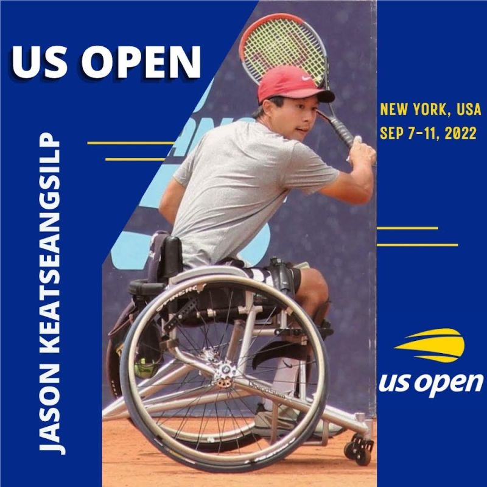
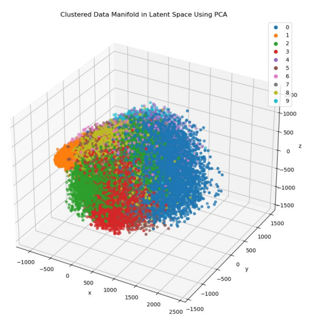
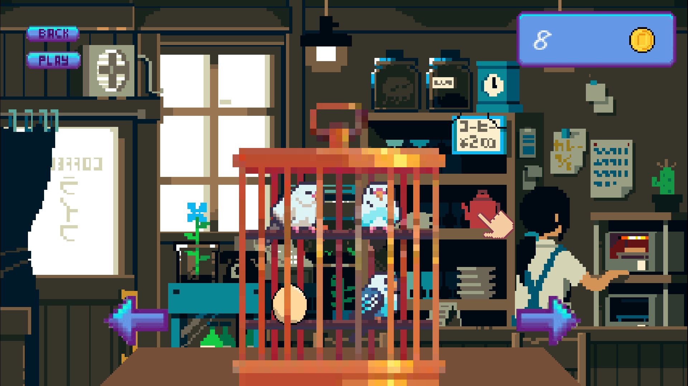

Ricardo Martinez
Founder of Torus Studio | Machine Learning
Welcome To My
Portfolio!
About Me
01Hi there👋! My name is Ricardo and I am a software developer with a passion
for creating innovative and efficient solutions. I have a strong foundation in computer science concepts and
a track record of successfully completing projects on time and within scope. In my free time, I enjoy
learning about new technologies and staying up-to-date with industry trends. I am constantly seeking out
opportunities to expand my skillset and take on new challenges.
As the founder of Torus Studio, a start-up that uses machine learning to create innovative VR games, I am
passionate about the potential of technology to change the way we interact with and experience the world. I
have always been drawn to the intersection of software development and creative expression, and at Torus
Studio, I have the opportunity to bring these two worlds together.
Prior to starting Torus Studio, I worked as a full-time student at The University of Arizona in Computer
Science, where I gained valuable experience in machine learning and software development. I saw an
opportunity to combine my skills and passion in the exciting field of VR gaming, and that's how Torus Studio
was born.
At Torus Studio, our goal is to push the boundaries of what is possible with machine learning and create
immersive, engaging games that inspire and entertain players. We are a small, dedicated team of developers
and designers who are passionate about building the future of VR gaming. We hope to not only create amazing
experiences for our players, but also to contribute to the larger conversation about the role of technology
in society as a whole.
Remarks
"I have the distinct pleasure of working with Ricardo in data science. His grasp of the subject and his passion to help others are to be commended. He really helped me better understand neural networks." -Aman Dwivedi (dwivedi.aman11@gmail.com)
"It is my privilege to recommend Ricardo Martinez for the Machine Learning Internship. I tutored Ricardo in two University of Arizona courses: Precalculus and Calculus I. During our time, I watched Ricardo grow into an exceptional individual who excels in his academic pursuits. As his tutor, I appreciated his respectful attitude and strong work ethic, but his skill of critical thinking stood out to me the most. Ricardo would constantly ask meaningful questions that helped provide different angles for finding solutions to problems. He would not settle on moving forward until he had full mastery of the topic at hand. When I first met Ricardo, he was a borderline C student in his PreCalculus course, and through developing these attributes, he transformed into an A student at the end of his Calculus I course. I have tutored over one hundred students, and to date, there have been very few students who have demonstrated such high levels of critical thinking like Ricardo. Through his critical thinking, other attributes, and the growth that he has made, I have full confidence in him. He will undoubtedly make an excellent addition to the Machine Learning Internship." -Jason Keatseangsilp (tutoringwithjasonk@gmail.com)
"I am happy to write on behalf of Ricardo Martinez in support of his application. Ricardo took ISTA 131, Dealing With Data, from me in Fall of 2021. Ricardo is bright, hard-working, responsible, enthusiastic, and a really nice person. I give him a strong positive recommendation. Ricardo earned an A in ISTA 131 (98% average). It is not hard to get a good grade in this class and this placed him in the top 15% of 80+ students. ISTA 131 fulfills the function of a second-semester coding class, but it is primarily an introduction to data science. We spend the bulk of our time on Python's pandas and matplotlib modules, but we also go through SQL with some degree of thoroughness and I throw the students into the deep end with git. Unfortunately, the git material has been optional since the start of the pandemic because it's so much easier to fix things in-person when they really get it tangled up. The class has an open-ended final project in which the students find their own dataset(s) and make three visualizations that ideally show us something interesting about the data and the real world. One of the images is required to be a scatter plot with a regression line, which is how far we get with data analysis in the class. However, Ricardo chose to go far beyond this and create a convolutional neural network to classify handwritten digits (so of course he used the MNIST data). Here is an image of the data that he made after doing dimensionality reduction:
As I stated before, ISTA 131 is only a second semester class and is pretty easy. But Ricardo went way beyond what was required for the class. He has intelligence, independence, enthusiasm, and works hard. It is easy to give him a positive recommendation." -Dr. Richard M. Thompson (rmthomps@arizona.edu)
My Work
02High Pressure
.png)
.png)
.png)
.png)
High Pressure is a Unity project I have been working on and off for the past year. It is an infinite and procedurally generated survival world all in Virtual Reality.
Convolutional Neural Network with MNIST
.png)
.png)
I programmed a convolutional neural network that was trained using the MNIST digit dataset of 60000 entries in CSV. It predicts what a user has drawn onto a canvas. I have also made a menu for visualizing many aspects such as the clustered data manifold in multidimensional latent space using principle component analysis (PCA). Some libraries used in this script were matplotlib, numpy, tensorflow, cv2, etc. Image credits to Krut Patel and Andre Ye.
MNCA
Try It!Multiple Neighborhoods Cellular Automata is a visually stunning simulation that features WebGL and shaders to create the visual effects and behaviors for simulating a 1000x1000 grid of synthetic digital life. This system is able to generate natural, biological forms and structures like amoeba-like cells with cell walls, cells that divide through mitosis, multi-celled worms that move on the grid, circular cells that act as predators, blobs that grow and divide, and fluid-like ripples and chains of cells resembling algae.
Fluid Simulation
For fun, I created a simulation of a fluid flowing through a pipe. The simulation utilizes the Navier-Stokes equations to accurately model the behavior of the fluid and its interactions with the pipe walls. I implemented the simulation using Javascript, and I also added a feature that allows users to visualize the fluid's velocity and pressure field.
L-System
L-System is a program that I created to explore the concept of fractal patterns and their applications in computer graphics. The program allows users to input different L-System rules and parameters to generate and visualize complex fractal patterns in real-time.
Quantum Mechanics
Quantum Mechanics is notorious for being one of the most challenging subjects to understand. As part of my studies in physics, I developed a simulation to explore the fundamental principles of quantum mechanics. The simulation allows users to visualize the configuration space plot of two fermions confined in a 1D harmonic oscillator. The user can adjust the potential energy and observe how it affects the energy levels and wave functions of the particles. This project demonstrates my ability to work with complex mathematical concepts and create interactive visualizations with WebGL.
Birdies
.png)
A game where you save up money through minigames to collect various species of birds and a variety of cage items. You must address their needs or else you lose them!
Follow The Rules
.png)
.png)
This is a multiplayer game where two players are frogs that must follow procedurally generated rules. If they break any of the rules they are given during the game, they die. Players can cooperate or play against one another.
Kitchen Time!
.png)
.png)
Quickly! Many customers are hungry and demand specific dishes. Think quickly and flexibly with this kitchen mayhem game.
Midi
.png)
.png)
.png)
.png)
You are a pink little monster avoiding the dangers of the procedurally generated dungeon maze. Find keys to progress to the next phase. As you progress you begin to learn the increasing dangers that await!
The Bottom
.png)
.png)
.png)
.png)
.png)
you have just witnessed the loss of your mother from a group of hungry sharks. Your brother has escaped far into the oceans. Your goal is to find him, exploring the many experiences along the way; friends and enemies to be made.
Typing Hell
.png)
.png)
Good at typing? Test your skills with this typing game.
Vendetta
.png)
.png)
Test your survival skills with this dangerously conquered procedurally generated monster world.
Who
.png)
.png)
.png)
A simple fun game where two players compete. One player hides amongst AI as the other player needs to find the player before they eat all the carrots!
World Without End
.png)
.png)
You have been stranded on an uncharted wasteland world with terrible dust storms. You must explore to find the tools needed to create a beacon and escape the planet.
Contact Me
03
ricardoamartinez@email.arizona.edu
Check out my personal instagram for travel pics and extra fun stuff.
https://www.instagram.com/ricardo.amartinez?igshid=MWI4MTIyMDE=Check out my art account.
https://www.instagram.com/megajdraw?igshid=YmMyMTA2M2Y=